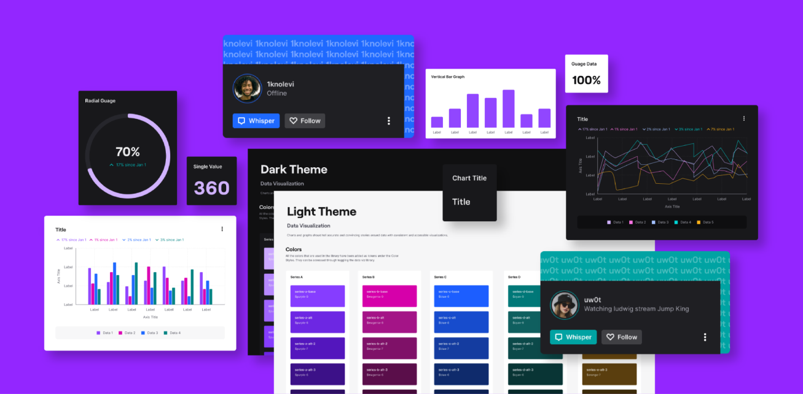

OVERVIEW
Reimagining Friends & Data Viz
My first project: Friends is a part of Twitch that gets a fair amount of traffic, but hasn’t changed since it was first designed. During the company-wide rebrand in 2019, Friends was unfortunately a space that wasn’t updated to match the look and feel of the new design language. I redesigned the Friends feature, prototyped the new design, and worked with engineers on code reviews and pull requests to make the design work go live.
My second project: As a part of Core UI, the central design system that powers all of Twitch - the goal is to provide UI libraries for designers to use, making their process more efficient, and creating consistency throughout the platform. We standardized a set of common web and mobile components but we needed to standardize more specific areas of design through smaller, more focused libraries; one of those areas was data visualization. Numerous areas across Twitch make use of charts and graphs (or any design method for visualizing numbers), and there is inconsistency and misuse of patterns. The goal of this project was to create a Core UI Data Viz Library from scratch, so that designers can have defined design patterns to refer to, guidelines around when to use which type of chart or graph, and a UI kit to pull visuals into their design work.
